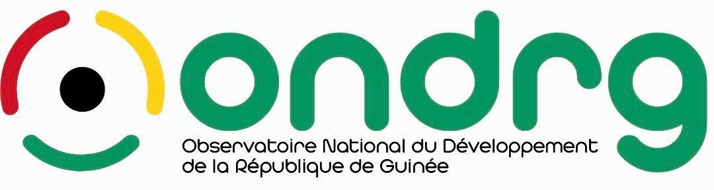

Document de travail de DigitInfra, préparé pour l'ONDRG. Ce n'est pas un outil officiel ; les logos sont utilisés avec l'accord de l'ONDRG pour cette présentation. Toutes les données sont fictives.DigitInfra working document prepared for ONDRG. It is not an official tool; the logos are used with ONDRG's agreement for this presentation. All data are fictitious.